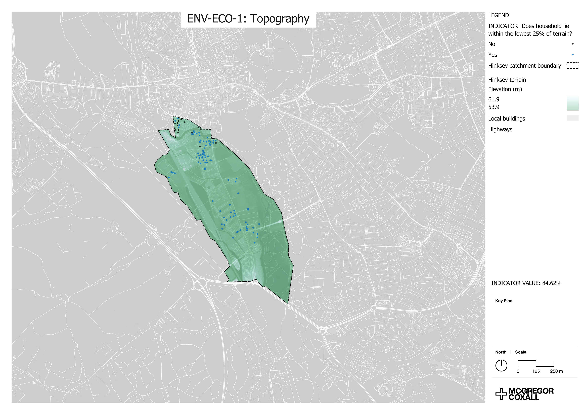
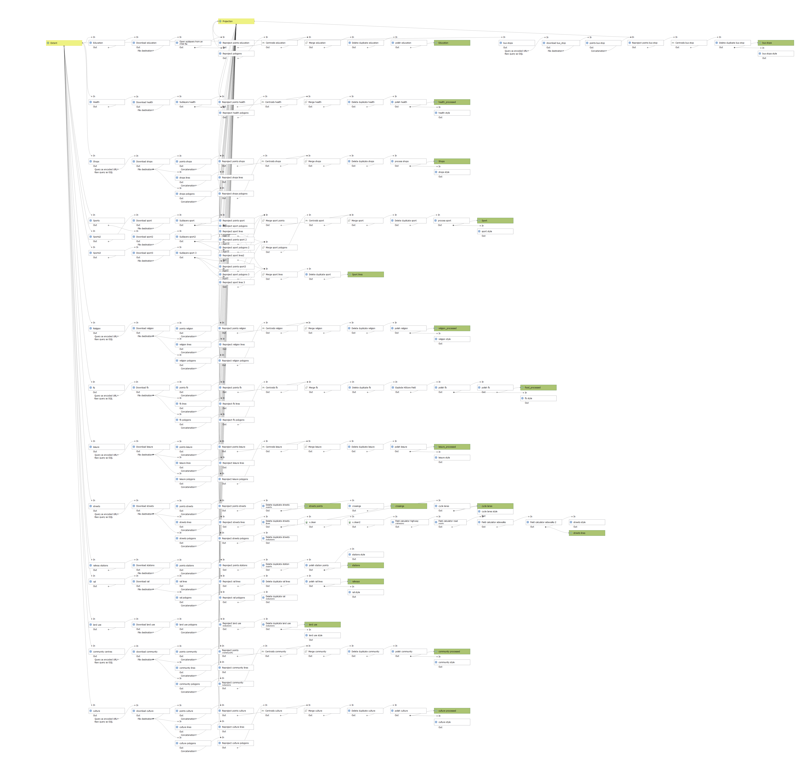

GROUNDWATER FLOOD RESILIENCE
This project focused on building a groundwater flood resilience framework from scratch for a local council in England. Several indicators were expressed and measured using spatial data, relying on careful yet detailed analysis to obtain accurate results.
PROJECT DETAILS
Several indicators were developed to measure and score the resilience of an area to groundwater flooding. For many of these indicators, such as those relating to the physical environment, some form of spatial analysis was required. Demographic data was calculated on a household level by distributing output area (OA) populations according to the volumes of residential buildings. This allowed me to assign each residence with a population estimate from which I could calculate pedestrian flows, using the buildings as origin points. For broader data, such as that at the census level, it was best to visualise this as a chloropleth map of the study area. In this project I utilised analysis methods such as travel time calculations, terrain analysis, and street network analysis.
IMAGE GALLERY
 Analysis of census data at the Output Area (OA) level to highlight levels of deprivation in the study area. This has been overlayed with local residences to give an insight into the spatial distribution of homes. The average value was calculated from the attribute table of the indicator's OA boundary layer.
Analysis of census data at the Output Area (OA) level to highlight levels of deprivation in the study area. This has been overlayed with local residences to give an insight into the spatial distribution of homes. The average value was calculated from the attribute table of the indicator's OA boundary layer.
 Analysis of travel times to community centres, calculated by extracting overlapping residences with the travel-time isochrones.
Analysis of travel times to community centres, calculated by extracting overlapping residences with the travel-time isochrones.

Analysis of a digital terrain model (DTM) allowed me to identify properties within the lowest 25% of terrain. Calculated by converting the DTM to a vector from a raster, isolating the smallest 20% from the attribute table and then extracting any intersecting properties.

This project involved as many as 9 seperate sites throughout the county. I built this QGIS model to automate the initial data querying from the OpenStreetMap database. This allowed me to gather data for each site far quicker than it would take to do each site manually. The model processes and filters the data to ensure only the features I needed would be returned with the desired symbology. I now utilise this model for all projects, and it is particularly useful for generating detailed context maps of prospective sites in a matter of minutes. Additionally, I have also been utilising python scripts to generate these maps when the data has been collected, to ensure even faster production of high quality maps.
 A large scale Patronage Betweenness (pedestrian flow) analysis was required for this project in order to identify the major routes to local amenities. The requisite data was processed in QGIS using census and other administrative data, then the betweenness was calculated via the Urban Network Analaysis (UNA) Toolbox in Rhino due to the advanced parameters it offers. This map highlights local pedestrian flow towards bus stops within the site and the surrounding area. This gives a unique insight into how access to public transport is impacted, and inform decisions on which areas to focus attention.
A large scale Patronage Betweenness (pedestrian flow) analysis was required for this project in order to identify the major routes to local amenities. The requisite data was processed in QGIS using census and other administrative data, then the betweenness was calculated via the Urban Network Analaysis (UNA) Toolbox in Rhino due to the advanced parameters it offers. This map highlights local pedestrian flow towards bus stops within the site and the surrounding area. This gives a unique insight into how access to public transport is impacted, and inform decisions on which areas to focus attention.